The notebook.
Hand-drawn illustrations of every concept we touched in Session 1. Same visual style across the deck — Moleskine notebook on cream paper.
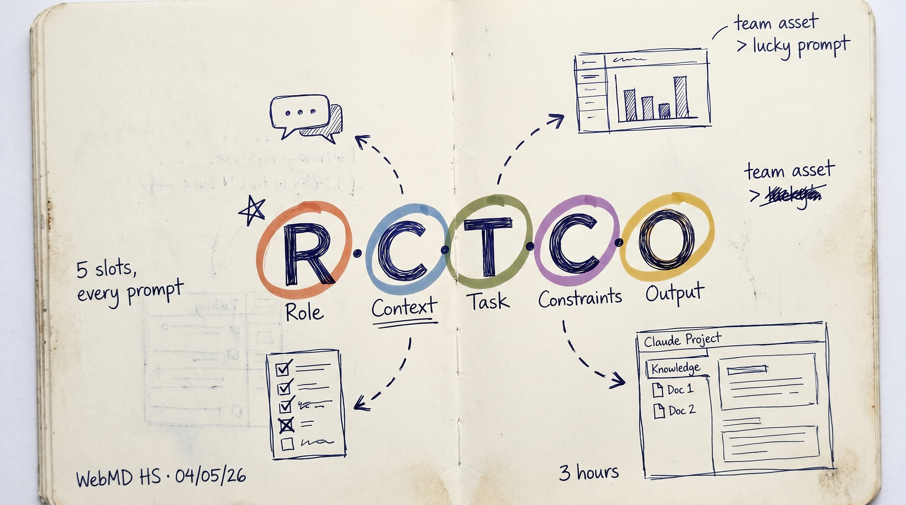
RCTCO. Five slots. Every prompt your team can run cold needs all five.
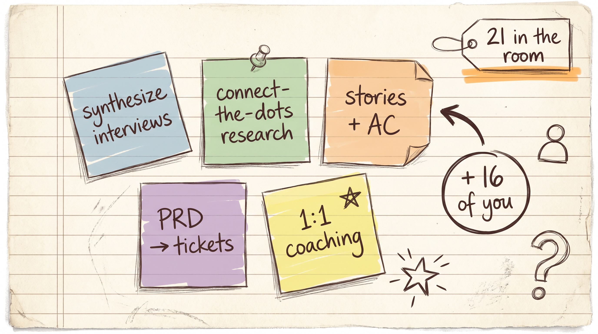
Five surveyed tasks, anonymized as Post-its. Every task fits one of the 5 patterns.
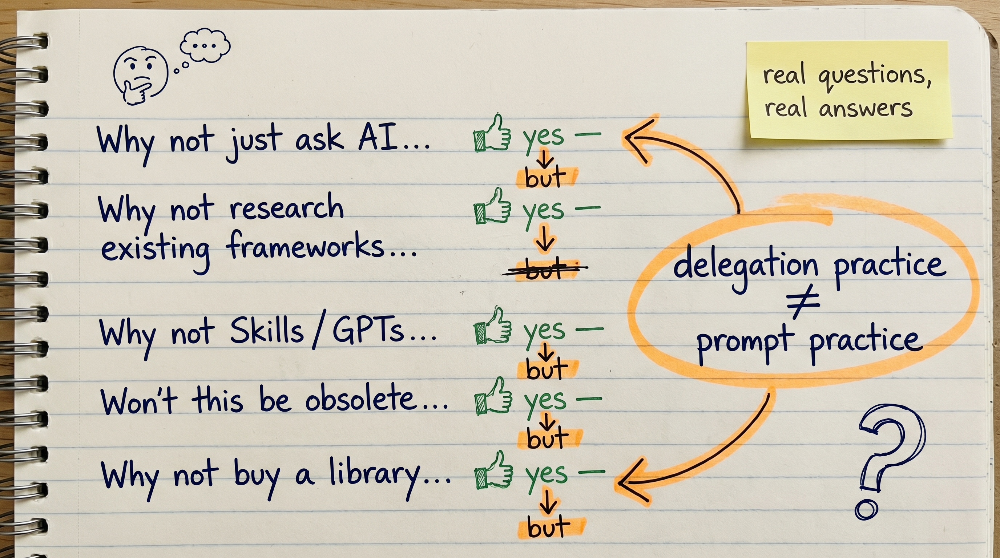
Three honest questions, three honest yes-buts. Models change. Delegation doesn't.
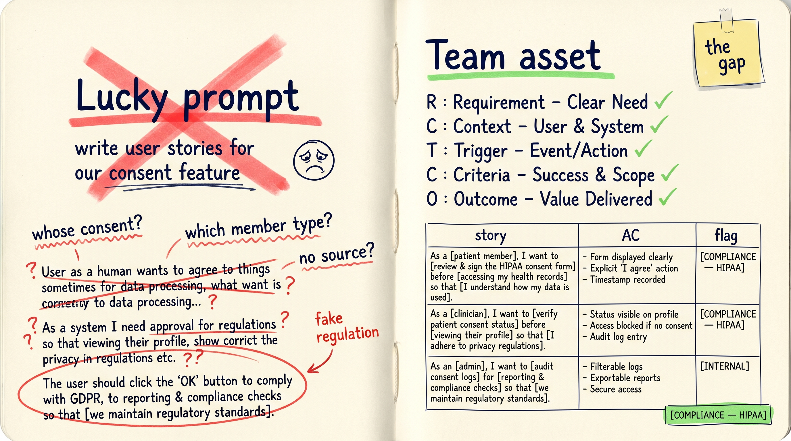
Lucky prompt vs team asset. Same task, two outputs, the gap between them is today.
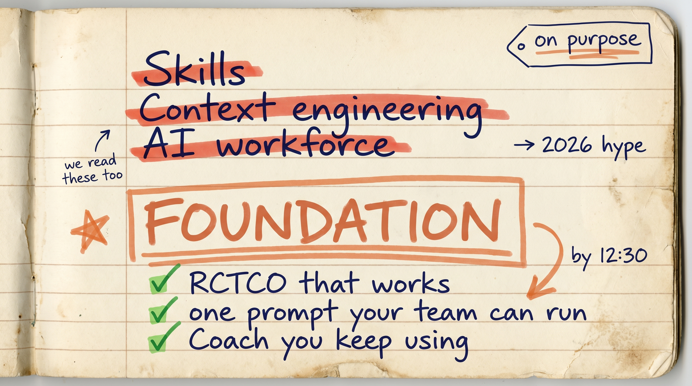
Skills, agents, AI workforce — they all sit on a prompt that works. Fix the foundation first.
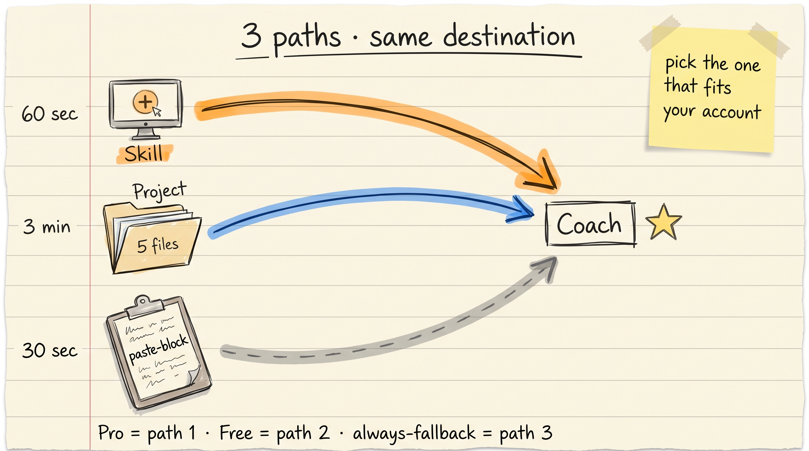
Three paths to Coach. Skill (60 sec) · Project (3 min) · Paste-block (30 sec).

Five product surfaces. Same back room of work — draft, synthesize, review, critique, translate.
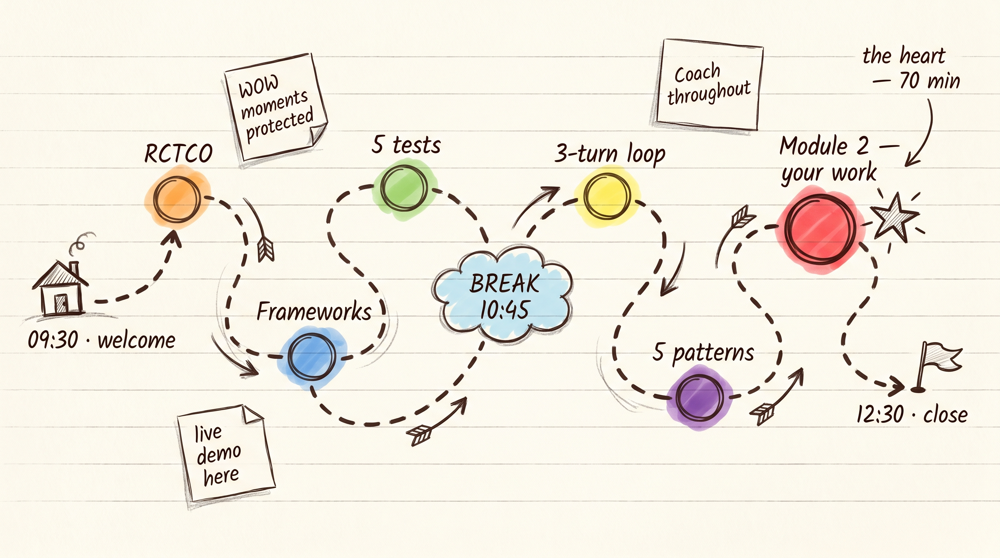
Three hours, three acts. Module 2 is the heart — 80 minutes on your real task.
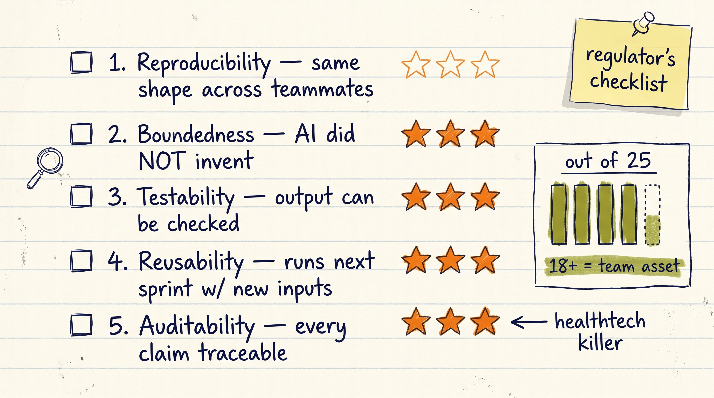
Reproducibility · Boundedness · Testability · Reusability · Auditability. Score out of 25.
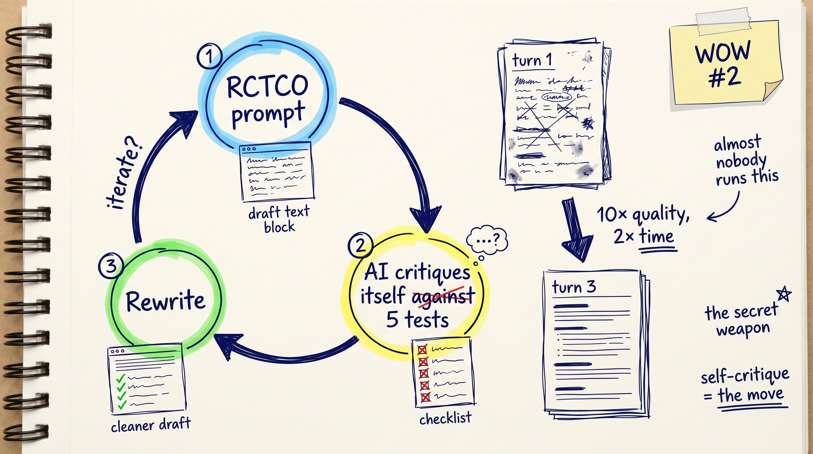
Don't throw away output. Build → self-grade → rewrite. Three turns beats starting over.
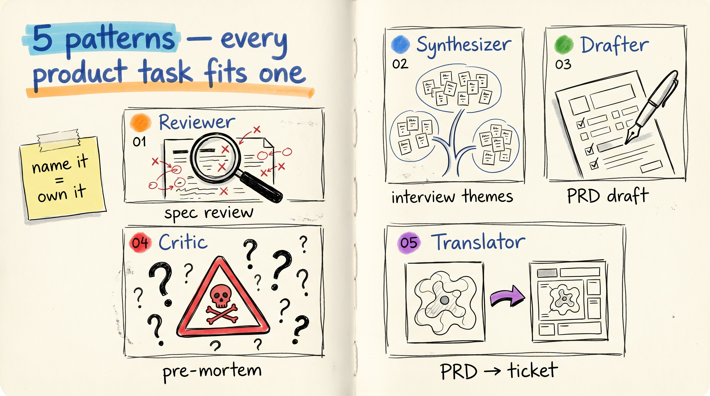
Drafter · Synthesizer · Reviewer · Critic · Translator. Name the pattern, know the prompt.
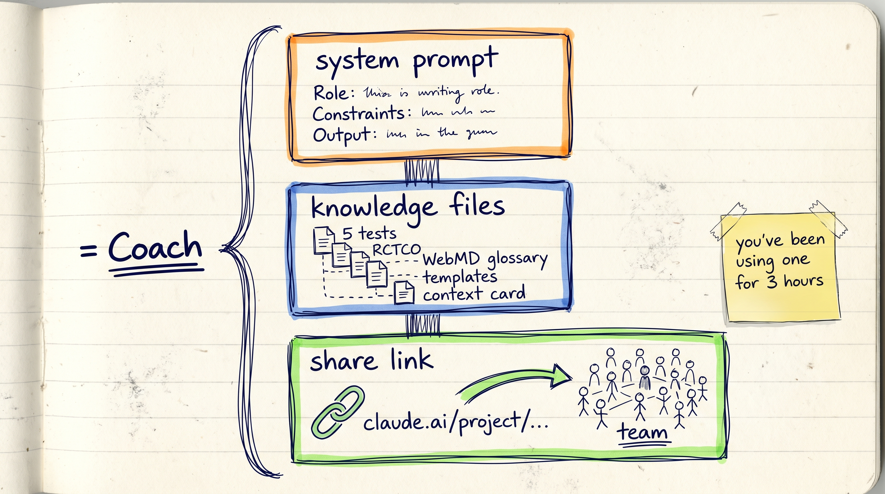
You've been using a Project all morning. Same pattern works for any repeated workflow on your team.
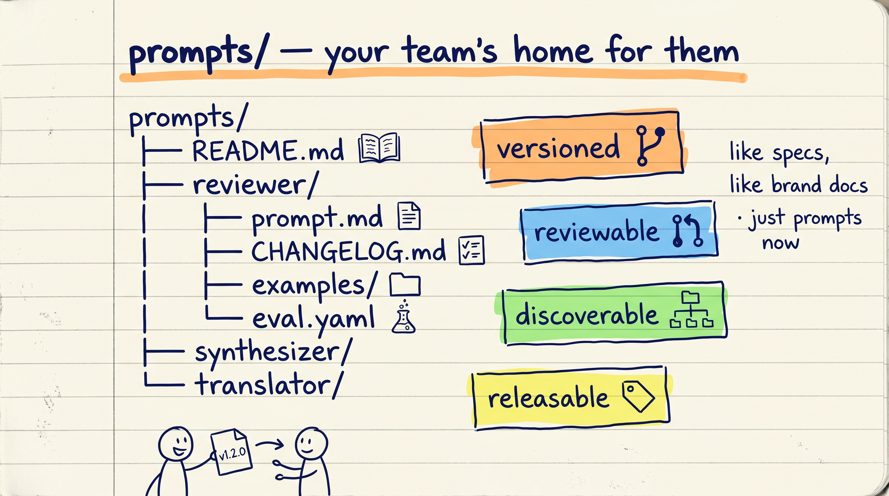
Versioned · reviewable · discoverable · releasable. The four properties your code already has.
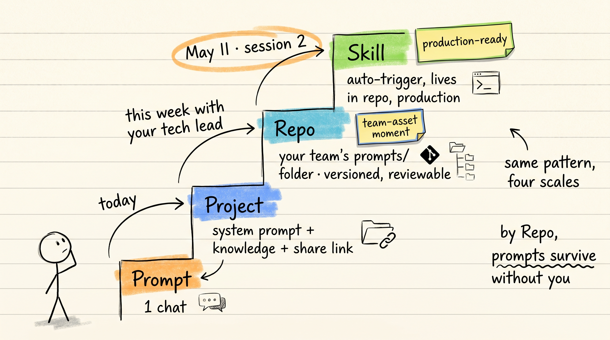
Prompt → Project → Repo → Skill. Same pattern, four rungs. Each rung tests harder.
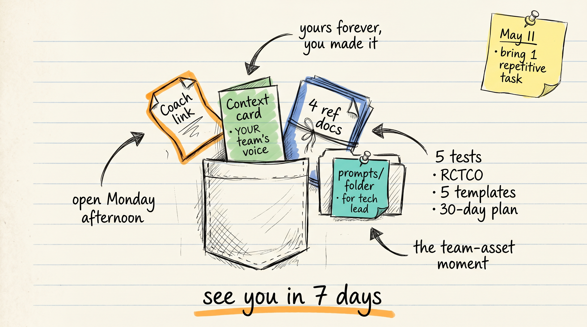
Four things in your pocket forever — Coach, Context Card, Cheat Sheet, Repo Idea.